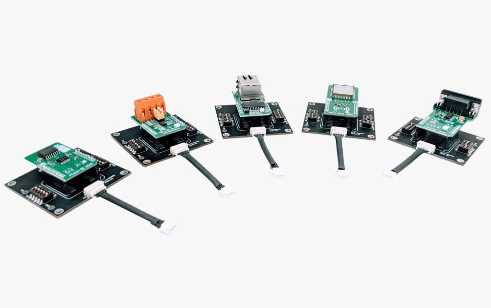

Accessories

Features
Starter Kit q200 lets you quickly evaluate the features and flexibility of qiio Smart Connectivity services qiio Sphere Studio® and the q200 Guardian
PoC in a Box Package allows you to develop sophisticated multi-node IoT projects. Includes 30 hours of engineering support.
q200 Guardian Seamlessly migrate to the q200 Guardian, the most secure cellular IoT solution on the market